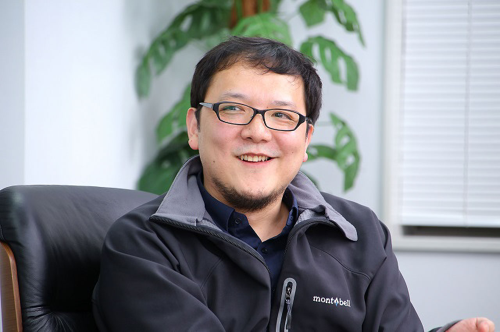

来歴

|
2004年、外資系IT企業から転職し、株式会社フロム・ソフトウェアにプランナーとして入社。アーマード・コアシリーズのプランナー、ディレクターを務めた後、2009年にディレクターを務めた『Demon's Souls』は新規タイトルにもかかわらず全世界で128万本以上（国内30万本）のスマッシュヒットとなり、海外でも多くの賞を受賞するなど高い評価を受けた。『DARK SOULS』ではディレクターとプロデューサーを兼任していたが、『DARK SOULS II』では、スーパーバイザーに移行した。その後、フロム・ソフトウェアの執行役員、製作第一部長を経て、2014年5月より、代表取締役社長に就任している。社長就任後もSCEの『Bloodborne』を手がけるなど、ディレクターとしての活動も続けている。 |
作品集
-
アーマード・コアシリーズ
- アーマード・コア ラストレイヴン
- アーマード・コア4
- アーマード・コア フォーアンサー
- Demon's Souls
-
DARK SOULSシリーズ
- DARK SOULS
- DARK SOULS II
- DARK SOULS III
- Bloodborne
- Déraciné
- SEKIRO: SHADOWS DIE TWICE
- ELDEN RING
宮崎氏の語る『ゲーム作り』とは
業界未経験の中途採用から、社長に
－－これまで2回にわたって、中堅社員の方々を取材し、フロム・ソフトウェアのゲーム作りに対する姿勢や考え方を語ってもらいました。いよいよ宮崎社長本人にお話を訊きます。
宮崎：よろしくお願いします。こういう流れのインタビューは初めてですが、何を言われていたのか気になるものですね（笑）
－－おかげさまで、いろいろ興味深いお話をいただきました。とはいえ、一番驚かされたのは、宮崎社長自身が中途入社の転職組ということですよね。そこが一番御社を象徴しているかもしれません。
宮崎：そうですね。中途であるとか、社歴であるとか、そういったことを気にしない社風だとは思います。あまりにも気にしないので、私自身、入社後に色々と驚かされました
－－そもそも、どうしてフロム・ソフトウェアの門を叩かれたのですか？
宮崎：大袈裟な話でなくて申し訳ないのですが、単純にゲームが作りたかったんですよ。私は当時、30歳直前でゲーム制作未経験という状態でしたから、そういった人間を企画職として採用してくれる会社はごく少なくて、その内の1つがフロム・ソフトウェアだったんです。私自身『キングスフィールド』のファンだったこともあって、ダメ元で受けてみようと。
－－業界未経験の人間を企画職で中途採用するというのは、業界でも非常に珍しいと思いますし、今でもそれを続けられているというのが、正直いって驚きです。
宮崎：それは、前社長の神の頃からの方針でして、現在もそれを引き継いでいます。モノ作りの現場には、刺激が必要だと思うんですよね。多様な感性、経験が共存していた方がいい。だから我々は、採用の前提にゲーム制作経験を置くことはしていませんし、また逆に、ゲーム制作経験を軽視するつもりもないんです。
－－フロム・ソフトウェアでは、どういう社員を求められているのですか？
宮崎：とても難しい質問ですし、立場によって異なる答えがあると思いますが、私は最近「共感力」という言葉を使っています。我々のモノ作りはチームで行うものですから、誰かのビジョンなり成果なりに共感し、それを自らの糧としてクオリティを高め、また誰かが共感できるようなビジョンなり成果なりを提示できることは、とても重要だと思うんですね。そうした共感の連鎖が、結局は作り上げるモノの価値を高めていくのだと思いますし、そうしたチームで、そうした人たちと一緒にモノ作りに従事したいと思っています。実際、先にインタビューを受けてくれた彼らは、そうした人材ですね。
－－世界中にファンがいて、世界に通用するゲームを作っている会社だと周りからは見られていると思いますが、宮崎社長はどのように思われていますか？ ちなみに社員の方はあまり意識されていなかったようですが……。
宮崎：現場としては、彼らの言うとおりだと思いますよ。売上であるとか、世界で通用するだとか、そういった言葉がモノ作りの目標として提示されることはありません。我々は、元々市場性を考慮したモノ作りを得意としていませんし、今更そうしたものを意識しても、あまりよい結果にはならないでしょうから。ただ一方で、我々のゲームが世界中の皆さんに遊んでもらえて、なんとか期待してももらっているという現状は、とても貴重なものなんです。だからユーザーさんにはとても感謝していますし、その感謝を忘れず、裏切らないよう努力していきたいですね。よいモノを作れば、しっかりと受け容れてもらえる、そうした状況を継続するためにも、よいモノを作り続けていく必要があるんです。とても難しく、それだけにやりがいもあることです。
なぜ、社長業とディレクターを両立し続けるのか
－－開発の最前線で、プレイングマネージャとして働いている経営者は珍しいですね。
宮崎：元々ディレクター志望ですからね（笑）。そうした条件でなければ、社長の話を受けていなかったと思います。
－－そうだったんですか。
宮崎：ただ、神（元社長）のビジョンというか、いちディレクターを社長に指名した意図自体には、賛成だったんです。フロム・ソフトウェアをモノ作りのスタジオとして明確に位置付けたい、ということですね。ですから、そのために私が役に立つのであれば、という気持ちで話を受けました。少なくとも記号としては分かりやすいだろうと。
－－宮崎さんにとってのモノ作りとは何ですか？
宮崎：うーん、それは分かりませんね。私にとって、何かを作りたい、というのはただ衝動であって、そこを掘り下げたいとはあまり思っていないんですよ。きっとつまらないものが埋まっていて、私はそれに幻滅してしまうでしょうから。あるいは、単にカッコいい答えが見つかっていないのかもしれませんが（笑）。
－－最近は『DARK SOULS』シリーズをはじめ、ダークファンタジーRPGを作るスタジオというイメージが広がっていますが、それ以外のゲームについてはどうですか？
宮崎：もちろん作っていきますよ。直近でも、『DARK SOULS Ⅲ』をシリーズの大きな区切りとする判断をしたのは、我々がソウルシリーズなり、ダークファンタジーなりだけの会社になることを避けたい意志があるからです。勿論、いわゆるコアゲームへの拘りを変えることはありませんし、金輪際ダークファンタジーをやらない、ということでもありませんが。これから先、新しい体制になった後のタイトルが順次発表されていくと思いますが、そこで伝わるものがあれば嬉しいですね。
－－逆にゲーム以外で何か作りたいという衝動はありませんか？
宮崎：少なくとも、今の私はあまり考えていません。というのも、現状のゲームというか、インタラクティブなデジタルコンテンツは、すごく面白いんですよ。新しい技術と可能性が次々と出てきて、それらに対してゲーム的アプローチも大きな力を持っていますから、今はどっぷりとそこに浸かっていたいですね。勿論、ゲーム以外を忌避している、ということでもありません。我々にとって重要なのは、価値あるモノ、面白いモノを作ることであり、それを作りたいと思えることです。今はそれが圧倒的にゲームである、というだけですね。
モノ作りに集中できる環境を提供したい
－－フロム・ソフトウェアに入社してから今までを振り返ってみて、いかがですか？
宮崎：楽しかったですね。辛いことも多くありましたが、それでも素晴らしい10年間でした。共にモノ作りに従事した仲間と、サポートしてくれた皆様と、チャンスをくれた会社には感謝しています。意欲があれば様々な分野に関わることができ、率直に評価してくれる、そうした環境がなければ、今の自分はありませんでした。
－－開発が大規模になるにつれて、縦割り化や効率化が求められるようにもなっています。
宮崎：はい。それ自体は当然に必要なことですが、それだけではつまらないとも思っています。先ほどお話ししたように、モノ作りには、刺激なり共感の連鎖なり、そうしたものがあって欲しいんですね。だから私は、基本的に「立場とか職種とか関係なく、意見があれば言って欲しい」と言っています。勿論何でもありではなくて、「ポジティブな意見として言うこと」「意見が受け容れられないことも許容すること」という条件はありますけどね。
－－社員に対して会社が提供できる物はなんですか？
宮崎：シンプルに言えば「モノ作りに集中できる環境」ですね。いいモノを作るための環境があり、いいモノを作っていれば、黙っていてもしっかりと評価されて、経済的にも報いられる。そして皆が自分たちが作っているものに誇りを持つ事ができる、そんな環境を提供したい。前者は社長として、後者はディレクターとしての責務だと思っています。
－－開発スタジオとして基礎体力を高めていくという話にもつながりますね。
宮崎：そうですね。私自身本質はディレクターなので、モノ作りに都合のいい環境が欲しいんですよ（笑）。それは私だけでなく、モノ作りに携わる皆にとって。結局はそれが、弊社の価値を高めてくれると信じています。
特別な世界を作り、その世界で特別な体験を作る楽しさ。それに共感できる人に来てほしい
－－御社では「設計」という独特なセクションがありますよね。
宮崎：はい。そこは独特ですよね。弊社のおける「設計」とは、一言で言えば、ゲームプログラマと企画の橋渡しを担う職種です。特にハイエンドゲームの開発では、プログラムの専門性も、企画の複雑さも、どんどんと増してきていますから、その両方を理解できる「設計」は、とても重要になってきていますし、とても遣り甲斐のある職種であると思いますね。
－－主に国内のゲームファンに支持されていたのが、『Demon's Souls』を契機に世界中で支持される企業に変わりました。いま、日本から世界市場で売れるゲームがなかなか作れないのも事実です。会社として、何か意識された点はありますか？
宮崎：うーん、我々としては、そういったところはあまり意識していません。これは、お話に出た『Demon's Souls』の以前から変わっていないのですが、特定の地域であれ世界であれ、市場を意識したモノ作りをすることはないんです。強いて言うのであれば、我々のターゲットは「ゲームが好きな人たち」です。彼らは日本にも、あるいは海外の色々な市場にも存在し、そうした人たちの間で共有できる価値があると思っているんです。実際私も海外出張などするようになり、そうした思いを強くしましたね。
－－スマホゲームをはじめとして、カジュアルなゲーム開発が大勢を占める中で、家庭用のハイエンドゲームを作る楽しさとは、なんでしょうか？
宮崎：まず誤解を解いておきたいのですが、弊社として、スマートフォンのゲームなり、小規模なゲームなりを作らないと決めている訳ではありません。というか、そうした幅はむしろ必要であると思っています。スマートフォンについて言えば、実際、『meet-me』ではスマートフォンアプリをリリースしていますし、スマートフォンアプリを研究、開発する部署もあります。私個人としても、ゲームデバイスとしてのスマートフォンには、面白さと可能性を感じてもいるんです。で、それを前提として、ハイエンドゲームを作る楽しさというのは、やはり独特なものがあります。それは、特別な世界を作り、その世界で特別な体験を作る楽しさですね。我ながらまったく上手く言えてないのですが（笑）、それでもここに共感してくれる人がいれば、是非一緒にモノ作りをしたいですね。